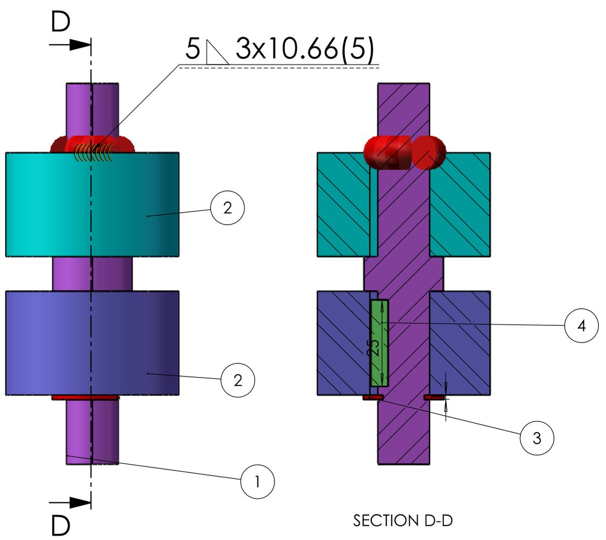
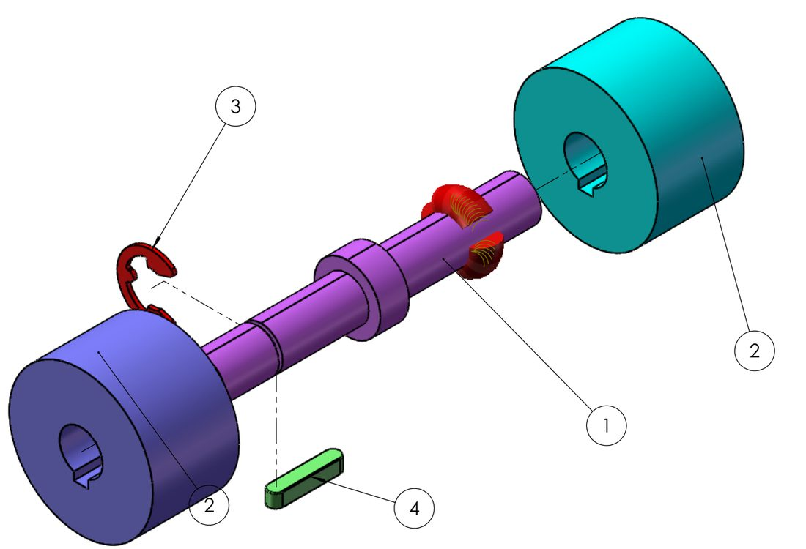
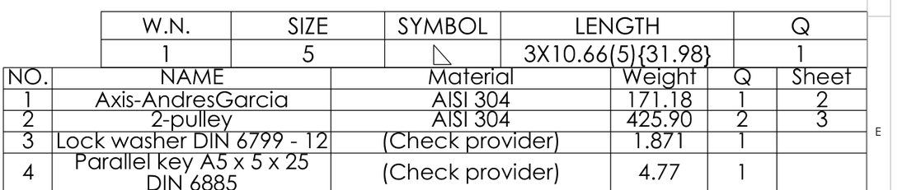

Hoja 1 · ensamblaje
- A3Formato IQS (logo), A3 apaisado
- 11Sección donde se vean chaveta y circlip
- 6–7Isométrica explosionada con líneas
- 2–3Globos + BOM (Material, Weight, Sheet)
- 4Símbolo · Claude
- 5Tabla de soldadura encima de la BOM · Claude

Símbolo de soldadura y SECTION D-D con la chaveta (verde) y la arandela.

Explosionado con globos y líneas de explosión.

Tabla de soldadura justo encima de la BOM.